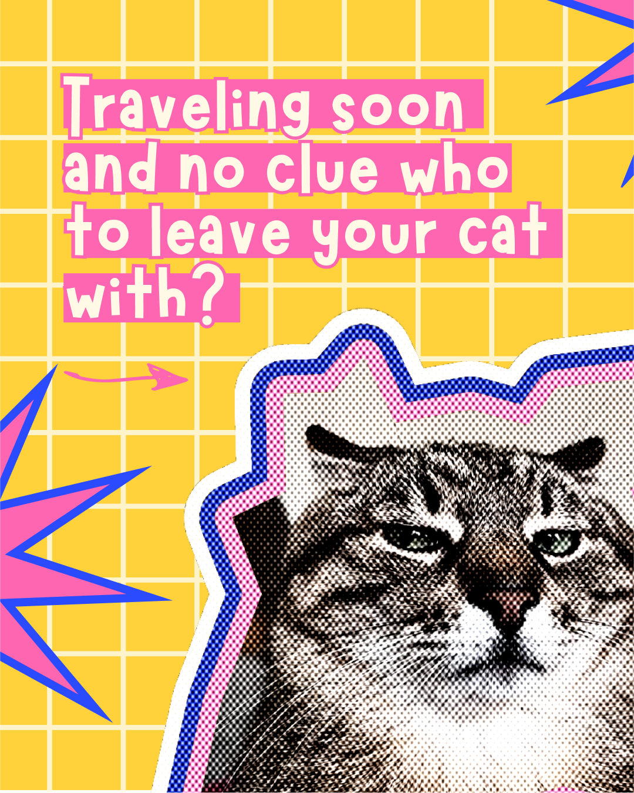
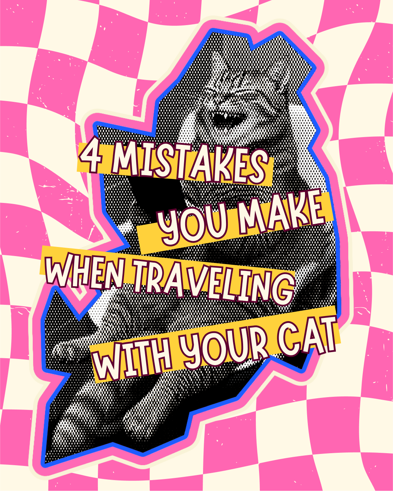
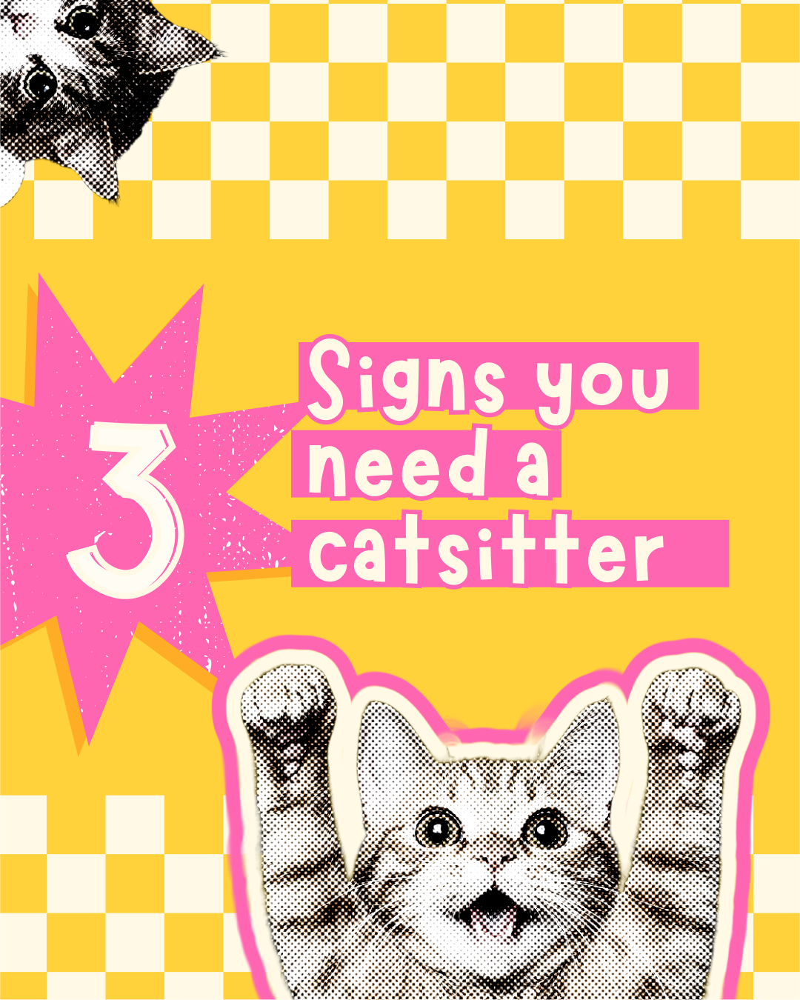
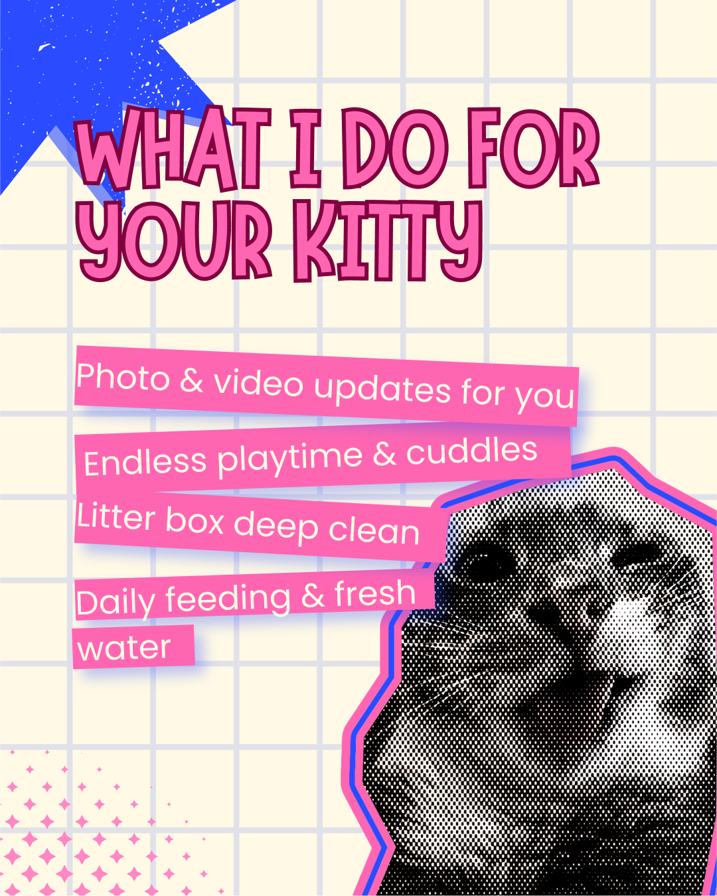
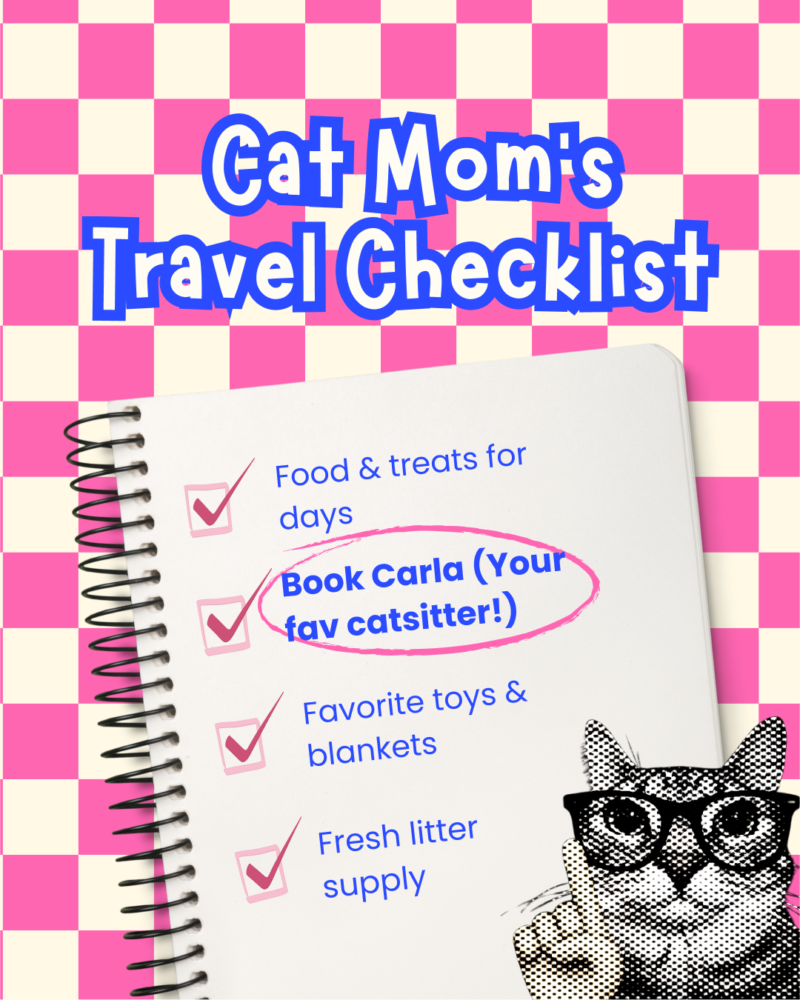

Diseñar el contenido de redes sociales para CATMI, un servicio de catsitter que necesita generar confianza a través de personalidad, no de fotos de stock genéricas. El reto: usar una paleta rosa y azul en bloques de color, tratamiento fotográfico en semitono y tipografía juguetona para que cada post se sienta cercano y memorable, con Carla —la catsitter— como la cara humana detrás de la marca.
Así se ve la identidad de CATMI aplicada a un feed real: pasa el cursor o haz clic sobre cada post para verlo en grande.
catmi_pe
Catsitting con cariño 🐾
CATMI · con Carla






¿Quieres ver más proyectos de diseño de marca y contenido?
Volver al portafolio